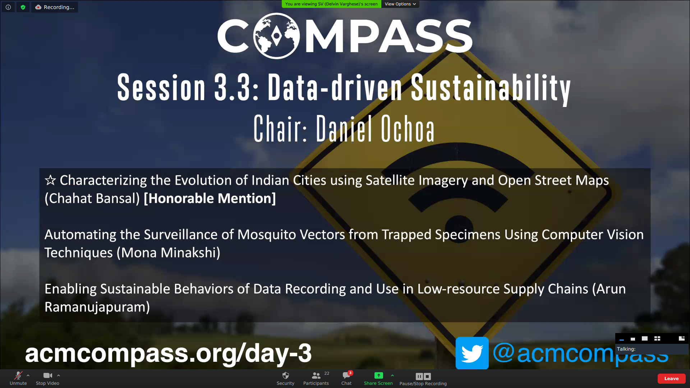
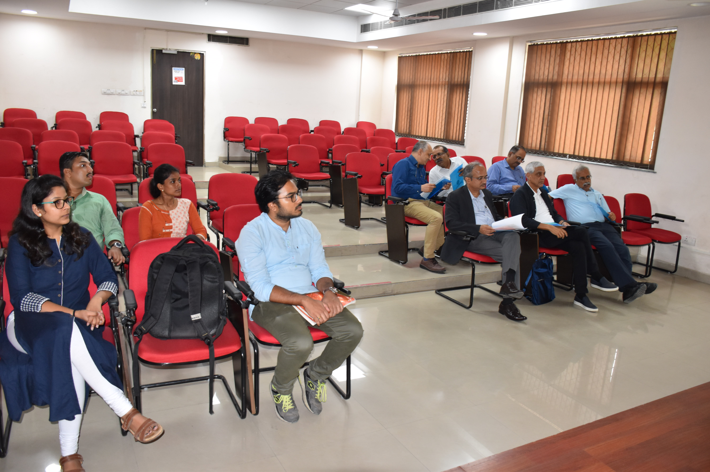

Featured Posts

Best Paper Honorable Mention Award at ACM COMPASS'20

Presented the full paper at the third annual ACM COMPASS, Virtually, 16 June 2020

Presented the full paper at 7th ACM IKDD CoDS and 25th COMAD, Hyderabad (India), January 2020

Presented the short paper at 7th ACM IKDD CoDS and 25th COMAD, Hyderabad (India), January 2020

Presented the research work to Mr. Vinod Khosla, Co-founder of Sun Microsystems